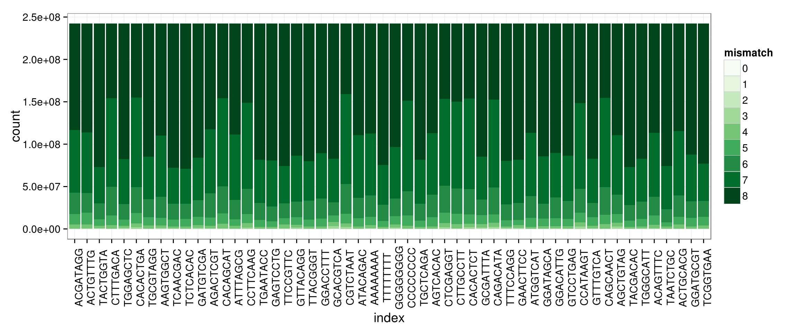
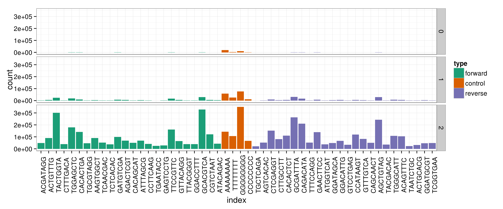
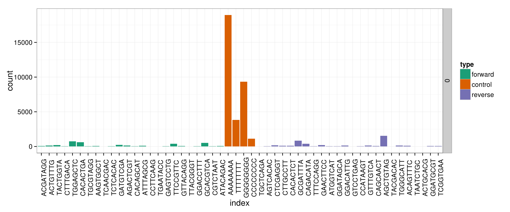

Last updated: 2015-04-11
Code version: 8fa8ebb3ea79edf3b8e277009f5669ebb7c3efc0
Po-Yuan prepared RNA collected from 96 single cells for sequencing. They were split into four mixes of 24 because that is the number of unique index sequences available for labeling separate samples. Each run was sequenced on one lane of a rapid run flow cell, for a total of two full rapid runs. In these runs, more of the index was sequenced. However, still very few were properly resolved. I investigated the sequences to learn how likely they were to be partial sequences of the correct index.
There were two flow cells:
/rawdata/Illumina_Runs/141030_SN_0795_0391_AHAV20ADXX/rawdata/Illumina_Runs/141030_SN_0795_0392_BHAV2FADXXFor this analysis, I focused on the first one, HAV20ADXX. I extracted all the index sequences from this flow cell, including from both the properly sorted reads and the undetermined reads (using the script gather_index.sh).
Po-Yuan is still unclear in which direction the index will be sequenced. Thus for comparison, I used the expected index sequences in /rawdata/Illumina_Runs/141030_SN_0795_0391_AHAV20ADXX/Unaligned1/SampleSheet.mk, which I refer to as “forward”, as well as the index sequences in /rawdata/Illumina_Runs/141030_SN_0795_0391_AHAV20ADXX/Unaligned2/SampleSheet.mk, which I refer to as “reverse”. As a control, I included “AAAAAAAA”, “TTTTTTTT”, “GGGGGGGG”, and “CCCCCCCC”. The script count_index.py counts the number of mismatches between each sequenced index and the 52 expected indexes.
When looking at all the data at once, it is clear that the majority of sequences are dominated by unknown “N” bases. For every expected index, most of the sequences have 6 to 8 mismatches.

Focusing in on the number of reads with perfect indexes, 1 mismatch, or 2 mismatches, the picture is still unclear. Neither the “forward” or the “reverse” index sequences look better, as would be expected if one set was truly being sequenced. Also, the homopolymer controls have comparable counts.

Focusing just on the perfect matches, it appears that the sequenced indexes are largely random.

## R version 3.1.2 (2014-10-31)
## Platform: x86_64-pc-linux-gnu (64-bit)
##
## locale:
## [1] LC_CTYPE=en_US.UTF-8 LC_NUMERIC=C
## [3] LC_TIME=en_US.UTF-8 LC_COLLATE=en_US.UTF-8
## [5] LC_MONETARY=en_US.UTF-8 LC_MESSAGES=en_US.UTF-8
## [7] LC_PAPER=en_US.UTF-8 LC_NAME=C
## [9] LC_ADDRESS=C LC_TELEPHONE=C
## [11] LC_MEASUREMENT=en_US.UTF-8 LC_IDENTIFICATION=C
##
## attached base packages:
## [1] stats graphics grDevices utils datasets methods base
##
## other attached packages:
## [1] ggplot2_1.0.0 knitr_1.7
##
## loaded via a namespace (and not attached):
## [1] colorspace_1.2-4 digest_0.6.4 evaluate_0.5.5
## [4] formatR_1.0 grid_3.1.2 gtable_0.1.2
## [7] htmltools_0.2.6 labeling_0.3 MASS_7.3-35
## [10] munsell_0.4.2 plyr_1.8.1 proto_0.3-10
## [13] RColorBrewer_1.0-5 Rcpp_0.11.3 reshape2_1.4
## [16] rmarkdown_0.5.1 scales_0.2.4 stringr_0.6.2
## [19] tools_3.1.2 yaml_2.1.13